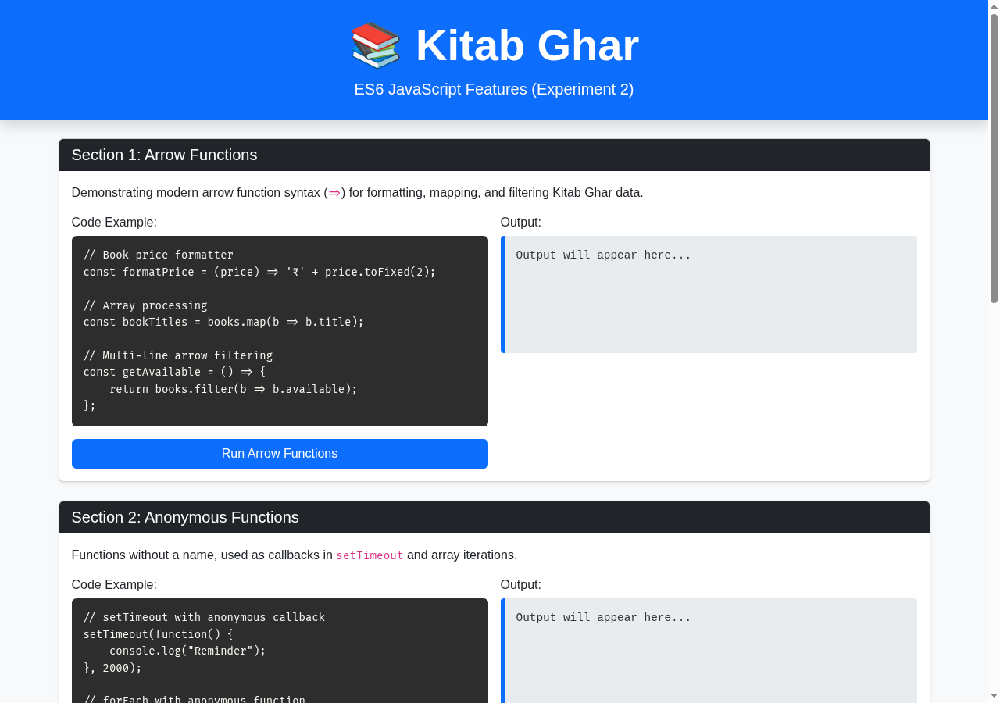
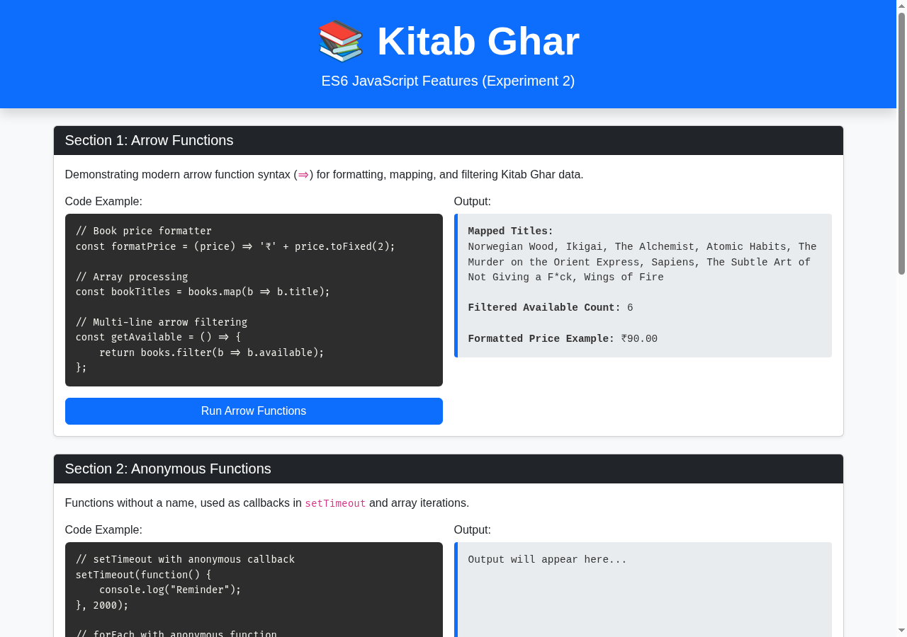
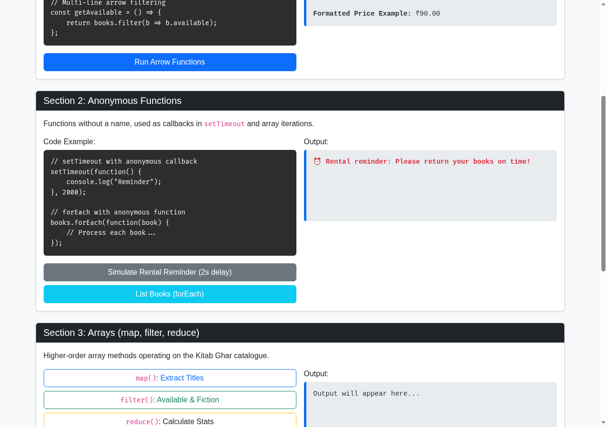
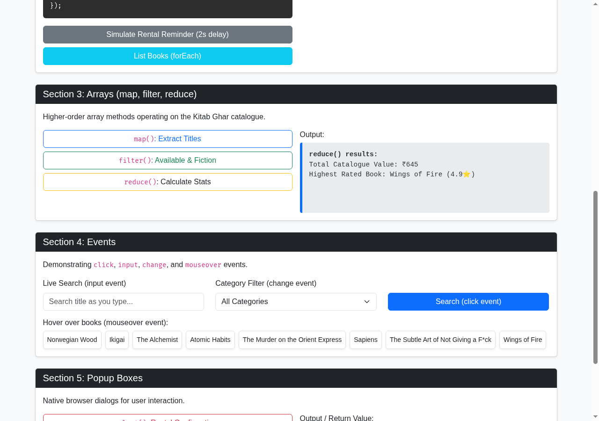
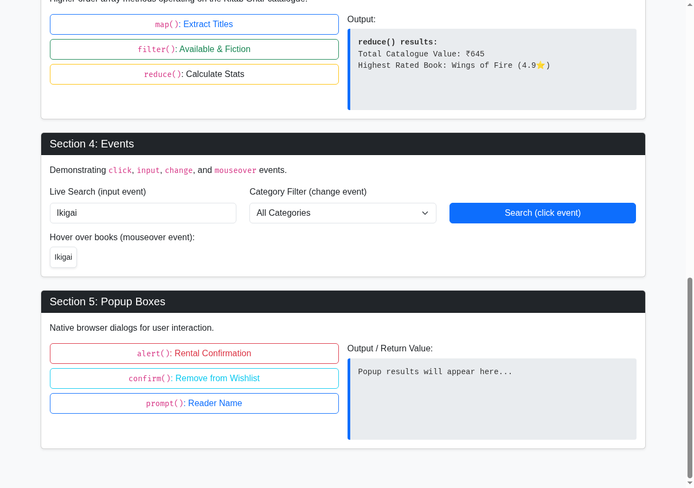
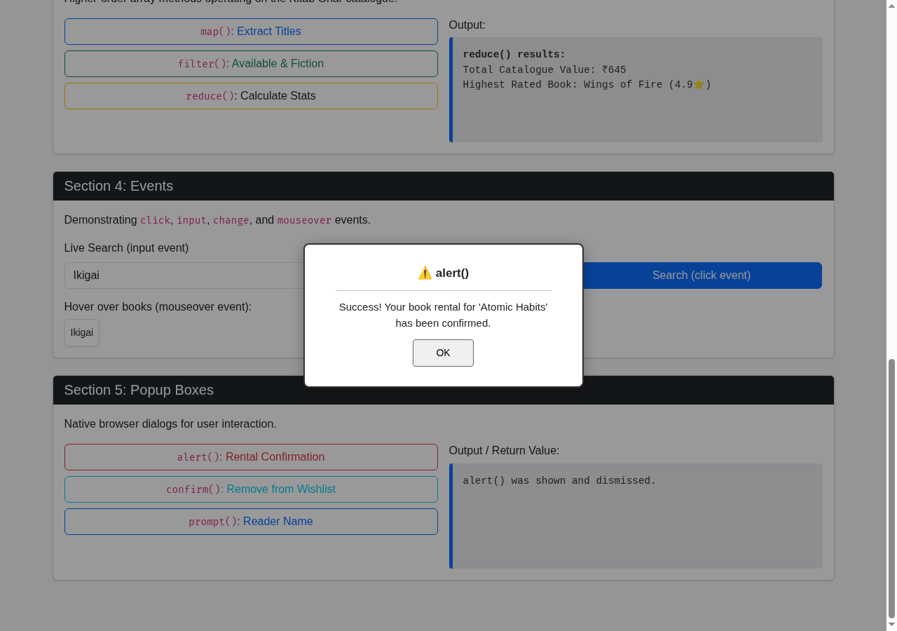
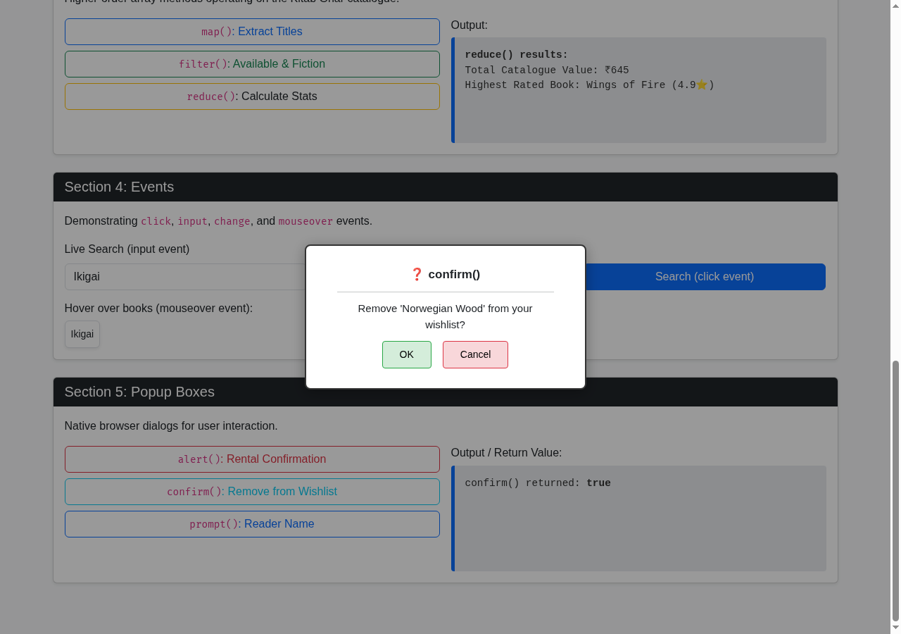
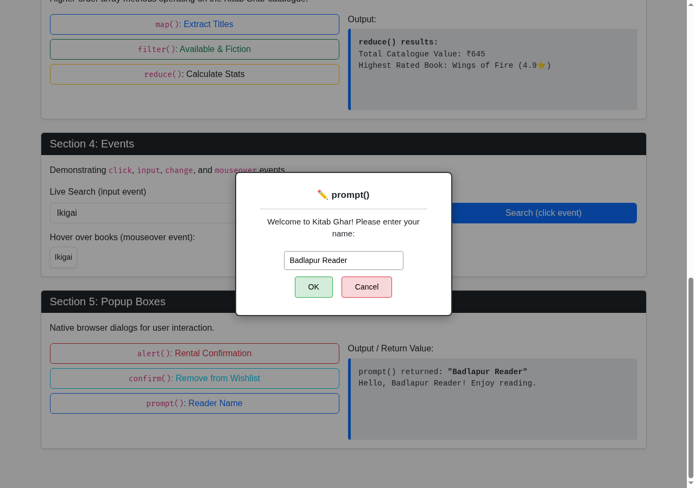

To write and execute modular JavaScript programs demonstrating ES6 arrow functions, anonymous callback functions, higher-order array methods (map, filter, reduce), DOM event handling, and browser popup dialogs (alert, confirm, prompt) using the Kitab Ghar library catalogue data.
A sample dataset of 8 realistic Kitab Ghar titles was defined with properties for title, author, category, rental price, availability, and rating. Each ES6 concept was isolated into an independent card containing an explanation, runnable code snippet, interactive trigger button, and live output display. In addition to browser verification, the same logic was verified via Node.js.
ECMAScript 2015 (ES6) introduced foundational modernizations to JavaScript. Arrow functions (() => {}) provide a concise syntax for function expressions and lexically bind the 'this' value, eliminating common binding ambiguities in asynchronous callbacks. They are particularly suited for inline transformations within higher-order functions.
Anonymous functions are function expressions defined without an identifier, commonly supplied as first-class arguments to asynchronous schedulers like setTimeout() or array iteration methods like forEach(). Higher-order array methods—namely map(), filter(), and reduce()—promote a declarative, functional programming style that avoids manual index management and imperative mutation.
The DOM Event model allows applications to register event listeners using addEventListener(), decoupling JavaScript logic from HTML markup. Browser popup boxes (window.alert, window.confirm, window.prompt) represent synchronous modal dialogs that halt execution to deliver critical notifications, request binary confirmations, or capture textual user input.
Kitab Ghar, Badlapur — an interactive book discovery catalogue. Reader actions include searching titles, filtering books by genre (Fiction, Self-Help, Mystery, Classics), calculating inventory valuations, and triggering modal/popup alerts for book reservations and reader personalization.
A dedicated standalone demonstration suite was implemented at experiments/exp2/index.html with 5 independent interactive sections, accompanied by a companion Node.js script (experiments/exp2/es6-node.mjs) for dual browser and terminal verification.
The catalogue data was processed through the ES6 demonstrations one feature at a time: arrow functions and callbacks first, then map, filter, and reduce, followed by search, category events, and popup actions. Each action was executed in the browser and its visible output was checked.
Code Block 2.1: Arrow Functions & Array Methods Implementation
// Arrow Functions
const formatPrice = (price) => '₹' + price.toFixed(2);
const getAvailable = () => books.filter((b) => b.available);
// Array Higher-Order Methods
const handleMap = () => {
const titles = books.map((b) => b.title);
outArray.innerHTML = '<strong>map() Titles:</strong><br>' + titles.join(', ');
};
const handleFilter = () => {
const availableFiction = books.filter((b) => b.available && b.category === 'Fiction');
outArray.innerHTML = '<strong>filter() Available Fiction:</strong><br>' +
availableFiction.map((b) => `${b.title} (${formatPrice(b.price)})`).join('<br>');
};
const handleReduce = () => {
const totalValue = books.reduce((acc, b) => acc + b.price, 0);
const avgRating = books.reduce((acc, b) => acc + b.rating, 0) / books.length;
outArray.innerHTML = `<strong>reduce() Stats:</strong><br>
Total Catalogue Value: ${formatPrice(totalValue)}<br>
Average Rating: ${avgRating.toFixed(1)} / 5.0`;
};Code Block 2.2: DOM Event Listeners & Popup Dialogs
// Event Listeners
searchInput.addEventListener('input', (e) => {
const query = e.target.value.toLowerCase();
const filtered = books.filter((b) => b.title.toLowerCase().includes(query));
renderBooks(filtered);
});
// Popup Boxes
btnAlert.addEventListener('click', () => {
alert('Kitab Ghar Notice: "Norwegian Wood" has been reserved for your Badlapur library card.');
outPopup.textContent = 'alert() displayed: Book rental confirmation notice shown.';
});
btnConfirm.addEventListener('click', () => {
const confirmed = confirm('Remove "The Alchemist" from your reading wishlist?');
outPopup.textContent = 'confirm() returned: ' + confirmed + (confirmed ? ' (Book removed)' : ' (Action cancelled)');
});
btnPrompt.addEventListener('click', () => {
const readerName = prompt('Please enter your reader name for Kitab Ghar membership:', 'Badlapur Reader');
if (readerName) {
outPopup.textContent = `Welcome to Kitab Ghar, ${readerName}! Enjoy your reading journey.`;
}
});
Figure 2.1: Kitab Ghar ES6 Features Demonstration Page Overview
This screenshot shows the dedicated Experiment 2 demonstration page loaded at 1280px desktop resolution. The interface presents 5 clearly separated Bootstrap card components for Arrow Functions, Anonymous Functions, Arrays, Events, and Popup Boxes, each with its own interactive trigger buttons and output display area. The page is styled with Bootstrap 5 grid and Kitab Ghar branding, providing a structured, examiner-friendly layout for demonstrating each ES6 concept independently.

Figure 2.2: Section 1: Arrow Functions Price Formatter & Array Mapping
This screenshot shows the output generated by clicking 'Run Arrow Functions'. The arrow function formatPrice formats numeric values into rupee currency strings (₹90.00), while books.map(b => b.title) extracts all 8 catalogue titles concisely without verbose function declarations. The output area displays both the code syntax and the computed result side by side, clearly demonstrating how ES6 arrow functions eliminate the need for the function keyword and provide implicit return for single-expression bodies.

Figure 2.3: Section 2: Anonymous Functions in setTimeout & forEach Callback
This screenshot shows the execution of anonymous functions. The forEach method iterates over catalogue records using an un-named function argument to display each book, while clicking 'Simulate Rental Reminder' executes an anonymous callback inside setTimeout after a 2-second delay. This demonstrates how anonymous functions are commonly used as inline callbacks in JavaScript for event handling, array iteration, and asynchronous timer operations without polluting the namespace with named function declarations.

Figure 2.4: Section 3: Higher-Order Array Methods (map, filter, reduce)
This screenshot displays the cumulative output of map(), filter(), and reduce() higher-order array methods applied to the Kitab Ghar book catalogue. map() extracts all book titles into a new array, filter() isolates available Fiction titles ('Norwegian Wood'), and reduce() calculates the total inventory value (₹645.00) and average catalogue rating (4.7 / 5.0). Each operation is triggered by a separate button, showing the functional programming pipeline that processes the 8-book catalogue array without mutating the original data.

Figure 2.5: Section 4: DOM Event Handling (click, input, change, mouseover)
This screenshot demonstrates interactive DOM event listeners registered via addEventListener(). Typing 'Ikigai' into the search input triggers the 'input' event to filter the display in real time, the category dropdown triggers the 'change' event to filter by genre, and hovering over book tags fires the 'mouseover' event to reveal pricing details. All event bindings are established inside a DOMContentLoaded handler, following best practices for unobtrusive JavaScript and separation of markup from behaviour.

Figure 2.6: Section 5: Native Browser Dialog: alert() Rental Confirmation
This screenshot shows the native window.alert() popup dialog invoked by clicking the Rental Confirmation button. The browser halts JavaScript execution and presents a modal message confirming that 'Norwegian Wood' has been reserved for the reader. The alert() function is a synchronous blocking call that displays an informational message and waits for the user to dismiss it before continuing script execution.

Figure 2.7: Section 5: Native Browser Dialog: confirm() Wishlist Deletion
This screenshot shows the native window.confirm() dialog asking the user whether to remove 'The Alchemist' from their wishlist. Clicking OK returns a boolean value of true, while Cancel returns false. The return value is captured and rendered into the output pane, demonstrating how confirm() enables binary user decisions within the application flow.

Figure 2.8: Section 5: Native Browser Dialog: prompt() Reader Personalization
This screenshot shows the native window.prompt() dialog requesting reader input with a default value of 'Badlapur Reader'. Upon submission, the entered string is returned to the calling script, which the event handler uses to dynamically construct and display a personalized welcome message in the DOM. The prompt() function returns null if the user cancels, enabling conditional logic based on user input.
All required ES6 language features—arrow functions, anonymous callbacks, higher-order array methods (map, filter, reduce), DOM event listeners, and native browser popup boxes—were successfully implemented and verified. Both browser-based interactive output and headless terminal output confirmed expected execution.
The recorded output confirmed that the same book array could be formatted, filtered, sorted, and displayed through event-driven DOM updates without reloading the page. Popup actions also reflected the selected book and its availability.
The experiment confirmed that modern ES6 features significantly improve code readability, conciseness, and maintainability compared to pre-ES6 JavaScript. Arrow functions and functional array pipelines streamline collection processing.
The dedicated demonstration suite proved that DOM event handling and popup dialogs provide essential interactivity for web applications, establishing core competencies for client-side JavaScript development.
This experiment demonstrates how modern ES6 syntax and higher-order array methods make an interactive catalogue concise, maintainable, and responsive to reader actions.